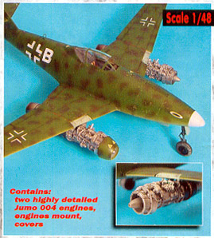
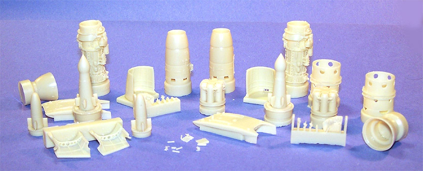
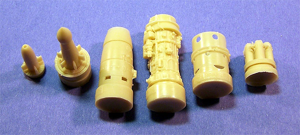
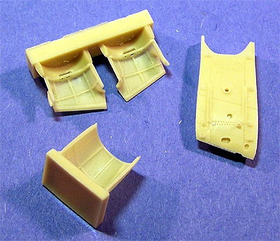

Aires 1/48 Me-262 Engine Set

Kit #4145
MSRP $45.99
Images and text Copyright © 2005 by Matt Swan
In the world of 1/48 scale aircraft modeling it seems that Luftwaffe kits are near the top of the popularity list and within that grouping the Messerschmitt 262 ranks pretty highly. As a result there are plenty of kit manufactures turning out variations of the “Storm bird” and no shortage of aftermarket detail kits ranging from cockpit sets to flight control sets, landing gear detail packages and gun bay sets. Not too long ago the Aires Company released a very extensive and somewhat expensive engine detail set targeting the Tamiya 262 kit. This package can be converted for use with virtually any manufacture 262 model and is truly a kit unto itself.

The detail package arrives in a small light duty cardboard box which is crammed full of wonderful resin goodies. My first concern was that with so many resin pieces stuffed into such a small space that there may be shipping damage but my concerns were unfounded. The parts are packaged very well with just enough packing material to keep everything safe. Some smaller pieces were broken off the pour stubs but the pieces themselves were still intact. The detail level of the main engine is the first thing to catch the eye – these things are just plain sweet!

Each engine is primarily comprised of six large pieces. These display lots of finely raised detail, logically placed pour stubs and no micro-bubbles. None of the pieces seems to have much in the line of flash and no warpage is evident throughout. In addition to these pieces we have a variety of smaller detail pieces and some copper wire in two sizes to help complete the overall effect of a turbojet engine.
While the engines themselves may seem more than enough to keep you busy we also have a inner mounting panel for the lower wing surface. The set also includes all the service access panels with well detailed interiors. When you use this package with your 262 model you might want to hang onto the original kit engines to cut apart for the main cover panels to place around the aircraft for general diorama effects. Overall there are 33 resin pieces here but we also have a small sheet of photo etched parts to help out. Most of these pieces are small levers and access release latches. With the twenty-nine Photo Etched pieces and two lengths of wire we have a total of sixty-two pieces in the set.

To help get all these nifty goodies put together in the general semblance of a Jumo 004 engine we get a small sheet of instructions that shows the general placement of all the larger parts followed by several close-up detail views for placement of the various PE parts. There are several well illustrated areas that show the proper bending pattern of the wires and their correct placement on the engine. Instructions are also given on which areas of the base kit wing must be removed to properly install the completed engines. Finally there is a single small panel devotes to a parts map. Overall it really makes it look like a simple process of construction and with luck not only I but you as well will be able to produce a stunning Jumo engine for the Me-262.
Conclusions
This is just about the most expensive detail set you can get for the 1/48 scale 262 kits. The only more expensive set that I have seen is also from Aires and includes all of this set as well as the cockpit, gear bays, gun bays and flight control surfaces. Generally speaking it is even more costly than the base model kit but seems well worth the price, especially if you are inclined to open the engines up. What’s nice about this is that it covers two engines so you could actually spread this over two kits leaving one engine closed up and that makes the cost just a little more tolerable.
The parts quality is as good as anything we can expect from Aires, which means damn good … we have very little flash, no air bubbles, good fit of primary parts and very clear instructions. For the 262 fans I highly recommend this engine set.